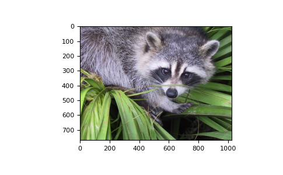
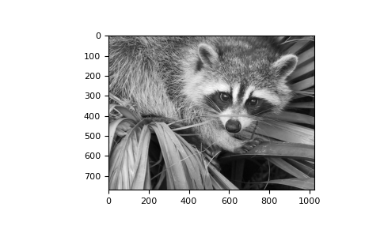

Tutorial: Linear algebra on n-dimensional arrays
Prerequisites
Before reading this tutorial, you should know a bit of Python. If you
would like to refresh your memory, take a look at the
Python tutorial.
If you want to be able to run the examples in this tutorial, you should also
have matplotlib and SciPy
installed on your computer.
Learner profile
This tutorial is for people who have a basic understanding of linear
algebra and arrays in NumPy and want to understand how n-dimensional
(\(n>=2\)) arrays are represented and can be manipulated. In particular, if
you don’t know how to apply common functions to n-dimensional arrays (without
using for-loops), or if you want to understand axis and shape properties for
n-dimensional arrays, this tutorial might be of help.
Learning Objectives
After this tutorial, you should be able to:
Understand the difference between one-, two- and n-dimensional arrays in
NumPy;
Understand how to apply some linear algebra operations to n-dimensional
arrays without using for-loops;
Understand axis and shape properties for n-dimensional arrays.
Content
In this tutorial, we will use a matrix decomposition from linear algebra, the
Singular Value Decomposition, to generate a compressed approximation of an
image. We’ll use the face image from the scipy.misc module:
>>> from scipy import misc
>>> img = misc.face()
Note
If you prefer, you can use your own image as you work through this tutorial.
In order to transform your image into a NumPy array that can be manipulated,
you can use the imread function from the matplotlib.pyplot submodule.
Alternatively, you can use the imageio.imread function from the
imageio library. Be aware that if you use your own image, you’ll likely
need to adapt the steps below. For more information on how images are treated
when converted to NumPy arrays, see A crash course on NumPy for images from
the scikit-image documentation.
Now, img is a NumPy array, as we can see when using the type function:
>>> type(img)
<class 'numpy.ndarray'>
We can see the image using the matplotlib.pyplot.imshow function:
>>> import matplotlib.pyplot as plt
>>> plt.imshow(img)

Note
If you are executing the commands above in the IPython shell, it might be
necessary to use the command plt.show() to show the image window.
Shape, axis and array properties
Note that, in linear algebra, the dimension of a vector refers to the number of
entries in an array. In NumPy, it instead defines the number of axes. For
example, a 1D array is a vector such as [1, 2, 3], a 2D array is a matrix,
and so forth.
First, let’s check for the shape of the data in our array. Since this image is
two-dimensional (the pixels in the image form a rectangle), we might expect a
two-dimensional array to represent it (a matrix). However, using the shape
property of this NumPy array gives us a different result:
>>> img.shape
(768, 1024, 3)
The output is a tuple with three elements, which means
that this is a three-dimensional array. In fact, since this is a color image, and
we have used the imread function to read it, the data is organized in three 2D
arrays, representing color channels (in this case, red, green and blue - RGB). You
can see this by looking at the shape above: it indicates that we have an array of
3 matrices, each having shape 768x1024.
Furthermore, using the ndim property of this array, we can see that
NumPy refers to each dimension as an axis. Because of how imread
works, the first index in the 3rd axis is the red pixel data for our image. We
can access this by using the syntax
>>> img[:, :, 0]
array([[121, 138, 153, ..., 119, 131, 139],
[ 89, 110, 130, ..., 118, 134, 146],
[ 73, 94, 115, ..., 117, 133, 144],
...,
[ 87, 94, 107, ..., 120, 119, 119],
[ 85, 95, 112, ..., 121, 120, 120],
[ 85, 97, 111, ..., 120, 119, 118]], dtype=uint8)
From the output above, we can see that every value in img[:,:,0] is an
integer value between 0 and 255, representing the level of red in each
corresponding image pixel (keep in mind that this might be different if you
use your own image instead of scipy.misc.face).
As expected, this is a 768x1024 matrix:
>>> img[:, :, 0].shape
(768, 1024)
Since we are going to perform linear algebra operations on this data, it might
be more interesting to have real numbers between 0 and 1 in each entry of the
matrices to represent the RGB values. We can do that by setting
>>> img_array = img / 255
This operation, dividing an array by a scalar, works because of NumPy’s
broadcasting rules). (Note that in
real-world applications, it would be better to use, for example, the
img_as_float utility function from
scikit-image).
You can check that the above works by doing some tests; for example, inquiring
about maximum and minimum values for this array:
>>> img_array.max(), img_array.min()
(1.0, 0.0)
or checking the type of data in the array:
>>> img_array.dtype
dtype('float64')
Note that we can assign each color channel to a separate matrix using the slice
syntax:
>>> red_array = img_array[:, :, 0]
>>> green_array = img_array[:, :, 1]
>>> blue_array = img_array[:, :, 2]
Operations on an axis
It is possible to use methods from linear algebra to approximate an existing set
of data. Here, we will use the SVD (Singular Value Decomposition) to try to rebuild
an image that uses less singular value information than the original one, while
still retaining some of its features.
Note
We will use NumPy’s linear algebra module, numpy.linalg, to
perform the operations in this tutorial. Most of the linear algebra
functions in this module can also be found in scipy.linalg, and
users are encouraged to use the scipy module for real-world
applications. However, it is currently not possible to apply linear
algebra operations to n-dimensional arrays using the scipy.linalg
module. For more information on this, check the
scipy.linalg Reference.
To proceed, import the linear algebra submodule from NumPy:
>>> from numpy import linalg
In order to extract information from a given matrix, we can use the SVD to obtain
3 arrays which can be multiplied to obtain the original matrix. From the theory
of linear algebra, given a matrix \(A\), the following product can be
computed:
\[U \Sigma V^T = A\]
where \(U\) and \(V^T\) are square and \(\Sigma\) is the same size
as \(A\). \(\Sigma\) is a diagonal matrix and contains the
singular values of \(A\),
organized from largest to smallest. These values are always non-negative and can
be used as an indicator of the “importance” of some features represented by the
matrix \(A\).
Let’s see how this works in practice with just one matrix first. Note that
according to colorimetry,
it is possible to obtain a fairly reasonable grayscale version of our color
image if we apply the formula
\[Y = 0.2126 R + 0.7152 G + 0.0722 B\]
where \(Y\) is the array representing the grayscale image, and \(R, G\)
and \(B\) are the red, green and blue channel arrays we had originally.
Notice we can use the @ operator (the matrix multiplication operator for
NumPy arrays, see numpy.matmul) for this:
>>> img_gray = img_array @ [0.2126, 0.7152, 0.0722]
Now, img_gray has shape
>>> img_gray.shape
(768, 1024)
To see if this makes sense in our image, we should use a colormap from
matplotlib corresponding to the color we wish to see in out image
(otherwise, matplotlib will default to a colormap that does not
correspond to the real data).
In our case, we are approximating the grayscale portion of the image, so we
will use the colormap gray:
>>> plt.imshow(img_gray, cmap="gray")

Now, applying the linalg.svd function to this matrix, we obtain the
following decomposition:
>>> U, s, Vt = linalg.svd(img_gray)
Note
If you are using your own image, this command might take a while to run,
depending on the size of your image and your hardware. Don’t worry, this
is normal! The SVD can be a pretty intensive computation.
Let’s check that this is what we expected:
>>> U.shape, s.shape, Vt.shape
((768, 768), (768,), (1024, 1024))
Note that s has a particular shape: it has only one dimension. This
means that some linear algebra functions that expect 2d arrays might not work.
For example, from the theory, one might expect s and Vt to be
compatible for multiplication. However, this is not true as s does not
have a second axis. Executing
>>> s @ Vt
Traceback (most recent call last):
...
ValueError: matmul: Input operand 1 has a mismatch in its core dimension 0,
with gufunc signature (n?,k),(k,m?)->(n?,m?) (size 1024 is different from
768)
results in a ValueError. This happens because having a one-dimensional
array for s, in this case, is much more economic in practice than building a
diagonal matrix with the same data. To reconstruct the original matrix, we can
rebuild the diagonal matrix \(\Sigma\) with the elements of s in its
diagonal and with the appropriate dimensions for multiplying: in our case,
\(\Sigma\) should be 768x1024 since U is 768x768 and Vt is
1024x1024.
>>> import numpy as np
>>> Sigma = np.zeros((768, 1024))
>>> for i in range(768):
... Sigma[i, i] = s[i]
Now, we want to check if the reconstructed U @ Sigma @ Vt is
close to the original img_gray matrix.
Approximation
The linalg module includes a norm function, which
computes the norm of a vector or matrix represented in a NumPy array. For
example, from the SVD explanation above, we would expect the norm of the
difference between img_gray and the reconstructed SVD product to be small.
As expected, you should see something like
>>> linalg.norm(img_gray - U @ Sigma @ Vt)
1.3926466851808837e-12
(The actual result of this operation might be different depending on your
architecture and linear algebra setup. Regardless, you should see a small
number.)
We could also have used the numpy.allclose function to make sure the
reconstructed product is, in fact, close to our original matrix (the
difference between the two arrays is small):
>>> np.allclose(img_gray, U @ Sigma @ Vt)
True
To see if an approximation is reasonable, we can check the values in s:
In the graph, we can see that although we have 768 singular values in
s, most of those (after the 150th entry or so) are pretty small. So it
might make sense to use only the information related to the first (say, 50)
singular values to build a more economical approximation to our image.
The idea is to consider all but the first k singular values in
Sigma (which are the same as in s) as zeros, keeping
U and Vt intact, and computing the product of these matrices
as the approximation.
For example, if we choose
we can build the approximation by doing
>>> approx = U @ Sigma[:, :k] @ Vt[:k, :]
Note that we had to use only the first k rows of Vt, since all
other rows would be multiplied by the zeros corresponding to the singular
values we eliminated from this approximation.
>>> plt.imshow(approx, cmap="gray")
Now, you can go ahead and repeat this experiment with other values of k, and
each of your experiments should give you a slightly better (or worse) image
depending on the value you choose.
Applying to all colors
Now we want to do the same kind of operation, but to all three colors. Our
first instinct might be to repeat the same operation we did above to each color
matrix individually. However, NumPy’s broadcasting takes care of this
for us.
If our array has more than two dimensions, then the SVD can be applied to all
axes at once. However, the linear algebra functions in NumPy expect to see an
array of the form (N, M, M), where the first axis represents the number
of matrices.
In our case,
>>> img_array.shape
(768, 1024, 3)
so we need to permutate the axis on this array to get a shape like
(3, 768, 1024). Fortunately, the numpy.transpose function can do that for
us:
np.transpose(x, axes=(i, j, k))
indicates that the axis will be reordered such that the final shape of the
transposed array will be reordered according to the indices (i, j, k).
Let’s see how this goes for our array:
>>> img_array_transposed = np.transpose(img_array, (2, 0, 1))
>>> img_array_transposed.shape
(3, 768, 1024)
Now we are ready to apply the SVD:
>>> U, s, Vt = linalg.svd(img_array_transposed)
Finally, to obtain the full approximated image, we need to reassemble these
matrices into the approximation. Now, note that
>>> U.shape, s.shape, Vt.shape
((3, 768, 768), (3, 768), (3, 1024, 1024))
To build the final approximation matrix, we must understand how multiplication
across different axes works.
Products with n-dimensional arrays
If you have worked before with only one- or two-dimensional arrays in NumPy,
you might use numpy.dot and numpy.matmul (or the @ operator)
interchangeably. However, for n-dimensional arrays, they work in very different
ways. For more details, check the documentation numpy.matmul.
Now, to build our approximation, we first need to make sure that our singular
values are ready for multiplication, so we build our Sigma matrix similarly
to what we did before. The Sigma array must have dimensions
(3, 768, 1024). In order to add the singular values to the diagonal of
Sigma, we will use the numpy.fill_diagonal function from NumPy, using each of
the 3 rows in s as the diagonal for each of the 3 matrices in Sigma:
>>> Sigma = np.zeros((3, 768, 1024))
>>> for j in range(3):
... np.fill_diagonal(Sigma[j, :, :], s[j, :])
Now, if we wish to rebuild the full SVD (with no approximation), we can do
>>> reconstructed = U @ Sigma @ Vt
Note that
>>> reconstructed.shape
(3, 768, 1024)
and
>>> plt.imshow(np.transpose(reconstructed, (1, 2, 0)))
should give you an image indistinguishable from the original one (although we
may introduce floating point errors for this reconstruction). In fact,
you might see a warning message saying “Clipping input data to the
valid range for imshow with RGB data ([0..1] for floats or [0..255] for
integers).” This is expected from the manipulation we just did on the original
image.
Now, to do the approximation, we must choose only the first k singular
values for each color channel. This can be done using the following syntax:
>>> approx_img = U @ Sigma[..., :k] @ Vt[..., :k, :]
You can see that we have selected only the first k components of the last
axis for Sigma (this means that we have used only the first k columns
of each of the three matrices in the stack), and that we have selected only the
first k components in the second-to-last axis of Vt (this means we have
selected only the first k rows from every matrix in the stack Vt and
all columns). If you are unfamiliar with the ellipsis syntax, it is a
placeholder for other axes. For more details, see the documentation on
Indexing.
Now,
>>> approx_img.shape
(3, 768, 1024)
which is not the right shape for showing the image. Finally, reordering the axes
back to our original shape of (768, 1024, 3), we can see our approximation:
>>> plt.imshow(np.transpose(approx_img, (1, 2, 0)))
Even though the image is not as sharp, using a small number of k singular
values (compared to the original set of 768 values), we can recover many of the
distinguishing features from this image.
Final words
Of course, this is not the best method to approximate an image.
However, there is, in fact, a result in linear algebra that says that the
approximation we built above is the best we can get to the original matrix in
terms of the norm of the difference. For more information, see G. H. Golub and
C. F. Van Loan, Matrix Computations, Baltimore, MD, Johns Hopkins University
Press, 1985.